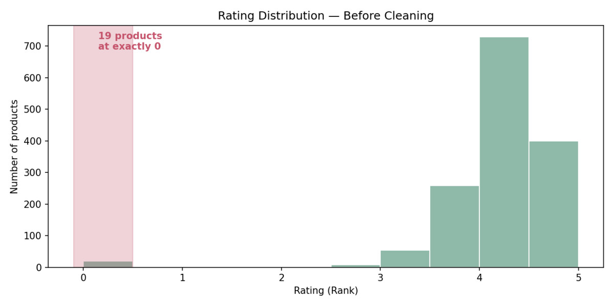
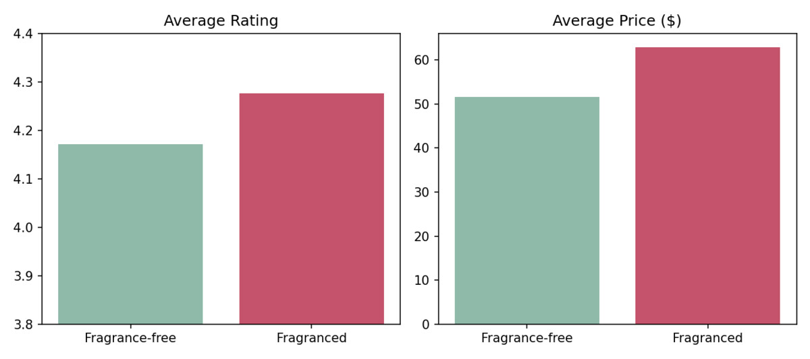
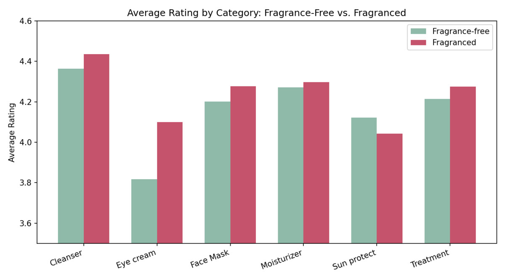

"Fragrance-free" is one of the most common clean-beauty claims on skincare packaging. Does it actually correlate with happier customers, or is it just a marketing checkbox people pay extra to avoid?
I analyzed 1,472 Sephora skincare products — moisturizers, cleansers, treatments, eye creams, sunscreens, and face masks — comparing products that list "fragrance" or "parfum" in their ingredients against those that don't, on both customer rating and price.
Before comparing anything, I checked the raw data for issues that could quietly distort the results. The dataset had no missing values and no duplicate rows — but the rating column told a different story: 19 of 1,472 products had a rating of exactly 0, on a scale that otherwise only runs from 1 to 5 stars.
A true 0 would mean "worse than a 1-star product," which isn't how this rating scale works — this almost certainly means "not yet rated," not "rated and hated." The distribution makes the gap obvious: every real rating clusters between 3 and 5 stars, with the 0s sitting in an empty band by themselves.

Left in, these zeros would silently drag down the average for whichever group they happened to land in, without reflecting any actual customer opinion. I dropped these 19 rows before running any comparison. The effect was small but directionally important: removing them widened the rating gap between groups and made the result more statistically significant, not less — a sign the zeros were noise, not signal.
Fragranced products rate higher, not lower — and cost meaningfully more. Both differences are statistically significant, not noise.

So on the surface: going fragrance-free doesn't buy you a better-reviewed product — if anything, the opposite. But that's not the same as "fragrance-free doesn't matter." It just means the value of fragrance-free isn't rating-driven; it's about sensitivity, allergies, and personal preference, which this dataset doesn't measure directly.
Averages hide category differences, so I broke it down by product type. Five of six categories follow the overall pattern — fragranced products rate slightly higher. Sun protection is the exception: fragrance-free sunscreens rate higher (4.12 vs. 4.04) and cost less than their fragranced counterparts.

"Clean" or "fragrance-free" isn't a universal rating booster — it doesn't automatically mean better-reviewed. But it isn't a universal downgrade either. The right read depends on the category: for leave-on, irritation-prone products like sunscreen, fragrance-free is a genuine selling point backed by the data. For indulgence categories like moisturizers and treatments, fragrance is doing real work as part of the product experience, and cutting it doesn't obviously help.
A product was flagged "fragrance-free" if its ingredient list didn't mention "fragrance" or "parfum" — the standard labeling terms for added scent. This is a simple text-presence check, not a certified clean-beauty label, so a handful of scented products using only a named essential oil (without the word "fragrance") may be miscategorized. Good enough for a directional read, not a regulatory claim.